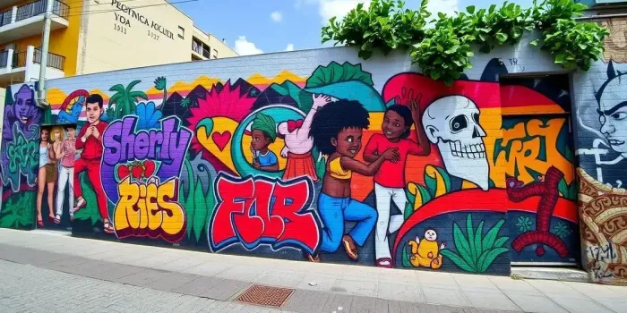

A arte urbana é uma forma de expressão que ocupa os espaços públicos das cidades, transformando muros, fachadas e ruas em verdadeiras galerias a céu aberto. Ela surge como uma manifestação cultural acessível, que dialoga diretamente com a população, sem a necessidade de instituições formais como museus ou galerias. Muitas vezes, carrega mensagens sociais, políticas e culturais, refletindo a realidade das comunidades onde está inserida. Dessa forma,a arte urbana se torna uma poderosa ferramenta de comunicação e identidade coletiva. Entre as principais formas de arte urbana estão o grafite, o muralismo, o estêncil e as intervenções artísticas. Cada uma dessas técnicas possui características próprias, mas todas compartilham o objetivo de ressignificar o espaço urbano. O grafite, por exemplo, é frequentemente associado à expressão livre e à contestação, enquanto os murais podem apresentar trabalhos mais elaborados e planejados. Essas manifestações contribuem para a valorização estética das cidades, muitas vezes revitalizando áreas degradadas e trazendo novas cores e significados para o ambiente.
Além do aspecto visual, a arte urbana também desempenha um papel importante na inclusão social e no empoderamento de artistas periféricos. Muitos artistas encontram nessa forma de expressão uma oportunidade de mostrar seu talento e contar suas histórias, mesmo diante de dificuldades econômicas e falta de acesso a espaços tradicionais de arte. Em vários casos, projetos sociais utilizam a arte urbana como instrumento educativo, incentivando jovens a desenvolver habilidades criativas e a se engajar com suas comunidades de forma positiva. Por outro lado, a arte urbana ainda enfrenta preconceitos e desafios, especialmente quando é confundida com vandalismo. A linha entre intervenção artística e depredação pode ser tênue, dependendo do contexto e da legislação local. Apesar disso, o reconhecimento dessa forma de arte tem crescido significativamente, com artistas urbanos ganhando destaque internacional e sendo convidados para exposições e projetos oficiais. Assim, a arte urbana continua evoluindo, consolidando-se como uma expressão legítima e relevante da cultura contemporânea.
Daniel Toys é um artista urbano brasileiro conhecido por suas intervenções vibrantes e cheias de identidade, que misturam elementos do grafite com referências da cultura pop e da infância. Seu trabalho se destaca principalmente pelo uso de cores intensas, personagens expressivos e uma estética lúdica que chama a atenção em meio ao cenário urbano. Ao longo de sua carreira, ele tem contribuído para a valorização da arte de rua no Brasil, levando sua produção para diferentes cidades e públicos.
Juliana Lama é uma artista brasileira que se destaca no cenário da arte urbana e contemporânea por sua abordagem sensível e simbólica. Seu trabalho frequentemente dialoga com temas como identidade, natureza, espiritualidade e o papel do feminino, criando composições que convidam à reflexão. Utilizando diferentes técnicas, como pintura mural, ilustração e intervenções urbanas, ela constrói imagens que equilibram delicadeza e força expressiva.